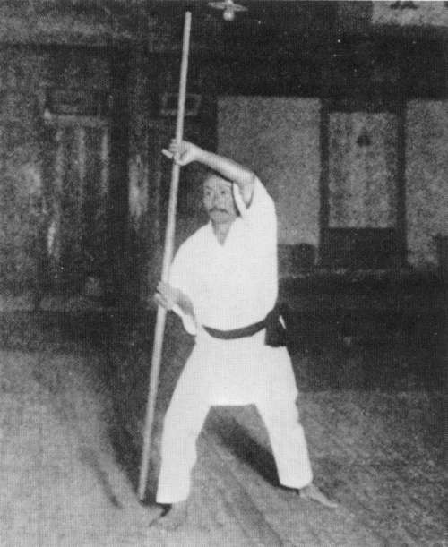

 |
| Správné pochopení karate a jeho správné pou¾ití je karatedó. Ten, kdo opravdu trénuje toto dó a skuteènì chápe karatedó, se nikdy nenechá snadno vtáhnout do boje. ®áci kteréhokoli umìní, obzvlá¹tì karatedó, nesmí nikdy zapomenout kultivovat svou mysl a tìlo. Dosáhnout sta vítìzství ve stu bitvách není nejvy¹¹í dovednost. Nejvy¹¹í dovedností je podrobit nepøítele bez boje. |
| Gièin Funako¹i |